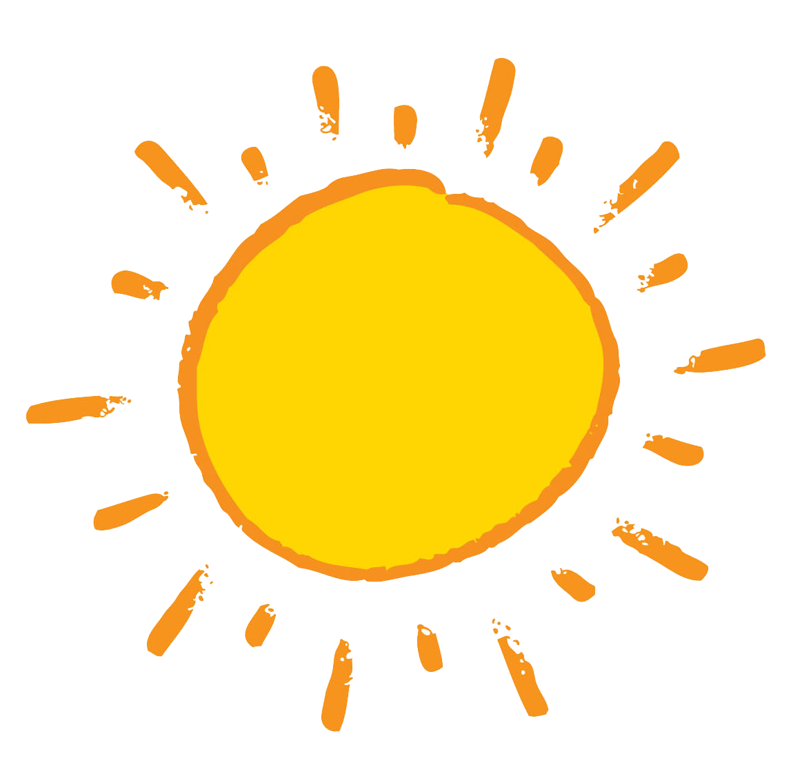
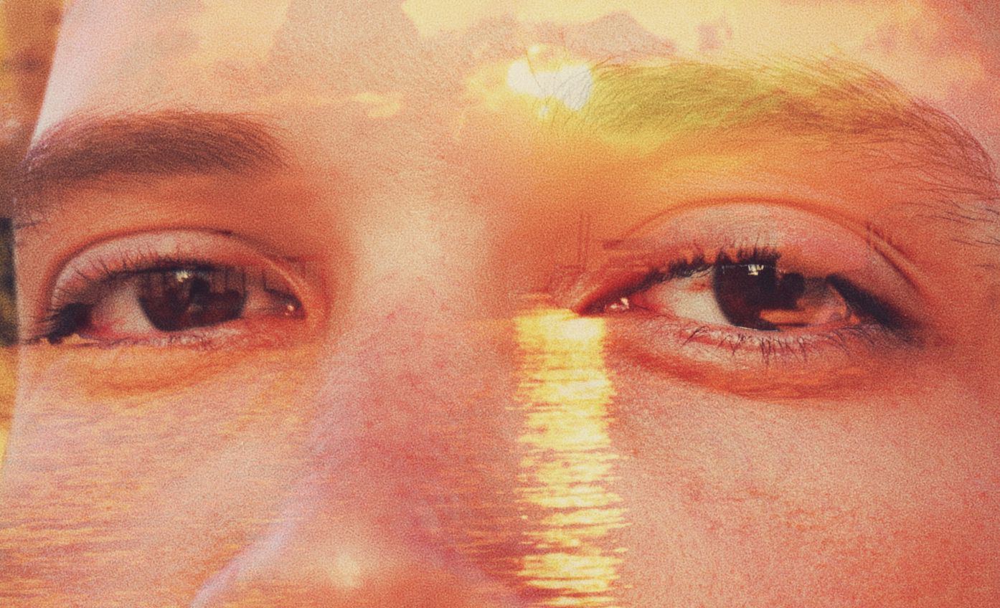
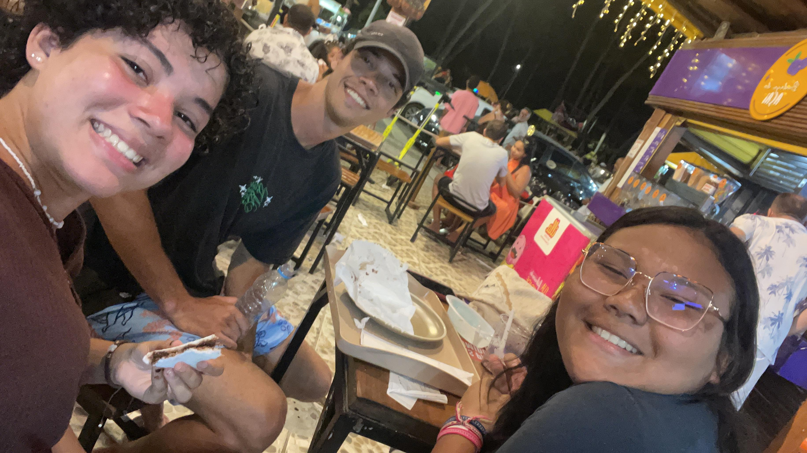
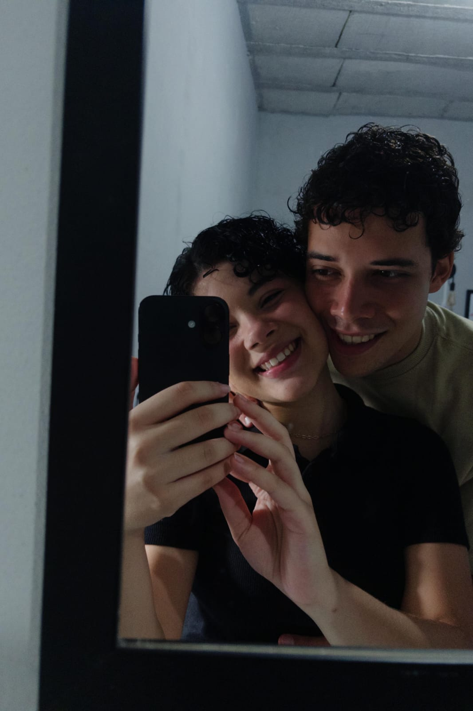
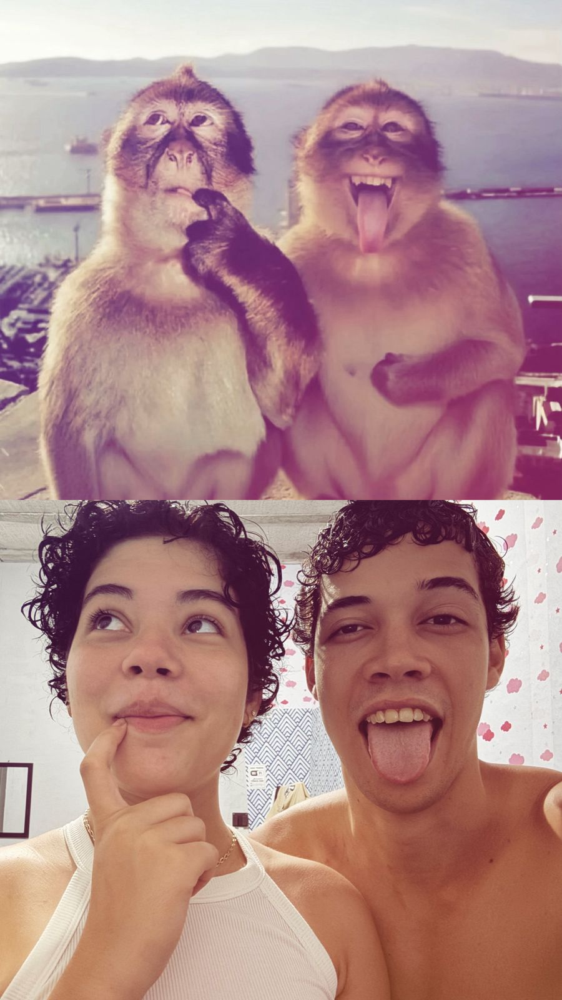
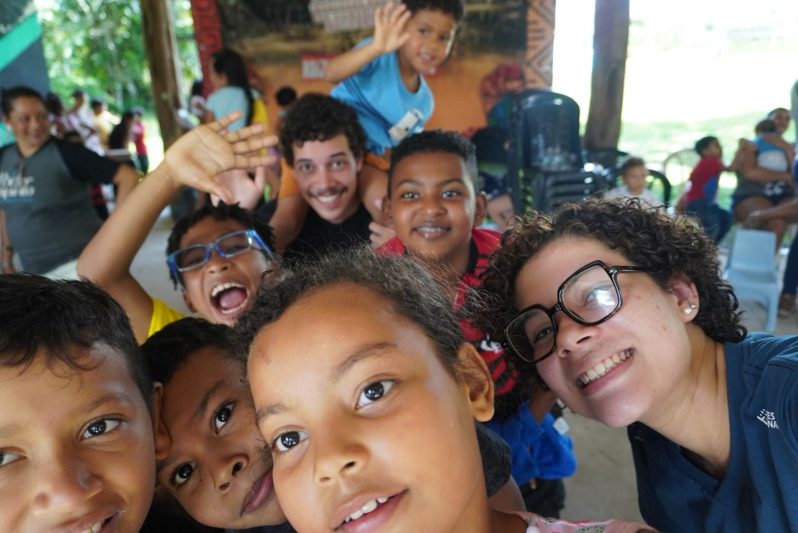
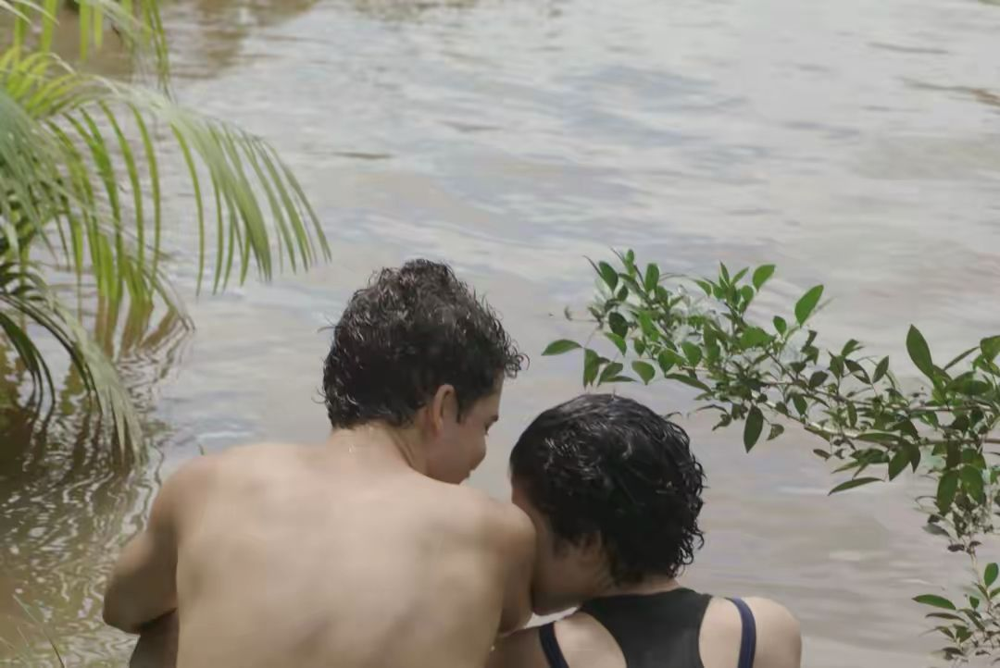
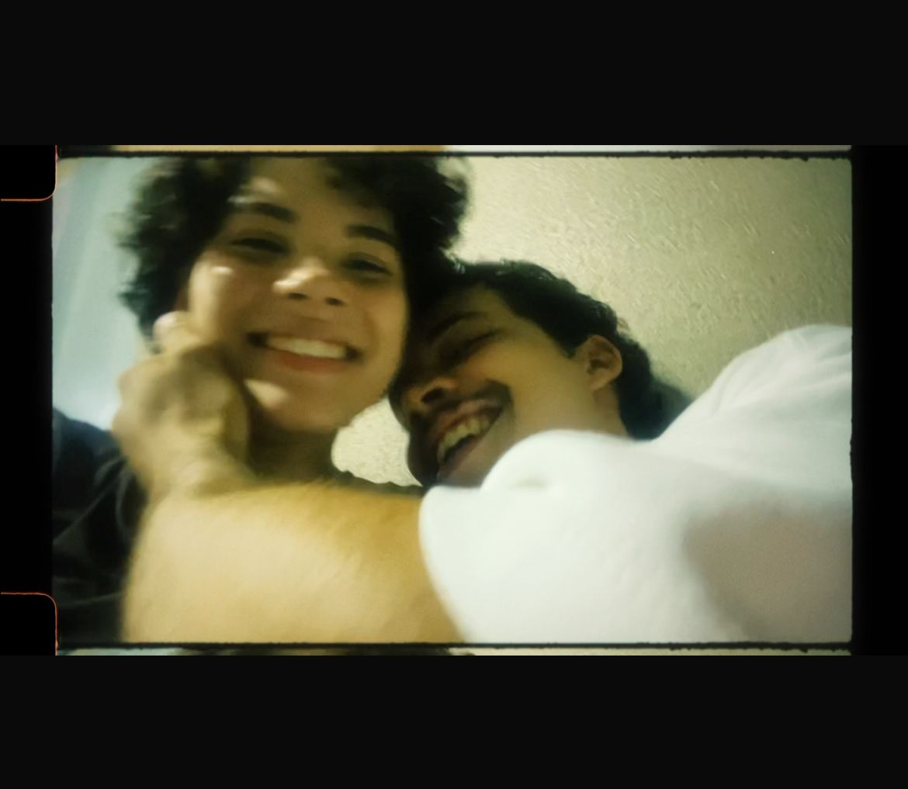

Para yasmim
Meu amor.
Lembra? Do dia na praia, no qual eu tava andando, a gente se olhou, voltei e decidi pedir para ti olhar minhas coisas.

Lembra disso? Quem diria que nós estando bem longe de nossas casas, sendo somente duas pessoas estranhas naquele dia, hoje estaríamos assim, planejando e organizando nossas vidas para estarmos juntos no futuro.

Você acredita? Eu acredito até minha última célula, gosto de ouvir sua voz respondendo essas perguntas, enquanto olho em seus olhos.



Sinto saudades de você todos os dias, mas não é como se eu não te tivesse em minha companhia, essa saudades que sinto e de poder fazermos juntos pessoalmente o que ainda não fizemos, entende isso?.
Lembra quando fomos ligação dias atrás e conversamos sobre nossos filhos que ainda não vieram?.
Eu senti pela centésima vez (Bom eu acho que foi a centésima vez, já perdi as contas) que você é a mulher da minha vida, consegui ver, eu me senti o Doutor Estranho tendo uma visão kkkkk.

Eu enxerguei você cuidando dos nossos garotos, ou garotas, só saberemos quando eles vierem.
Lembro quando você me disse que a palavra "Eu te amo" não expressa o tanto que sente por mim, mas não se preocupe com isso meu amor, eu sei exatamente como se sente kkkkk.
Eu poderia escrever durante horas, dias, meses, anos, sobre a gente, sobre você, talvez a gente escreva um livro quando estivermos velhos, ou já morando juntos, ou viajando pelos países e pelos estados que queremos viajar.

Anotando tudo que nos fizer refletir sobre nossa existência e sobre o quanto somos pequenos, mas o quanto podemos ser grande na vida de alguém, assim como seu irmão foi em sua vida.
Queria ter o conhecido, vejo o quanto seus olhos brilham quando fala dele, e isso me encanta, e me mostra o quanto o você dá valor para coisas que são significativas para você.
Então deixo aqui algumas fotos, tentei também editar o site ao seu gosto, me diz se gostou.

Às vezes acho que somos velhos demais para essa geração, enfim, Te amo Yasmim, espero que tenha gostado!!! S2
